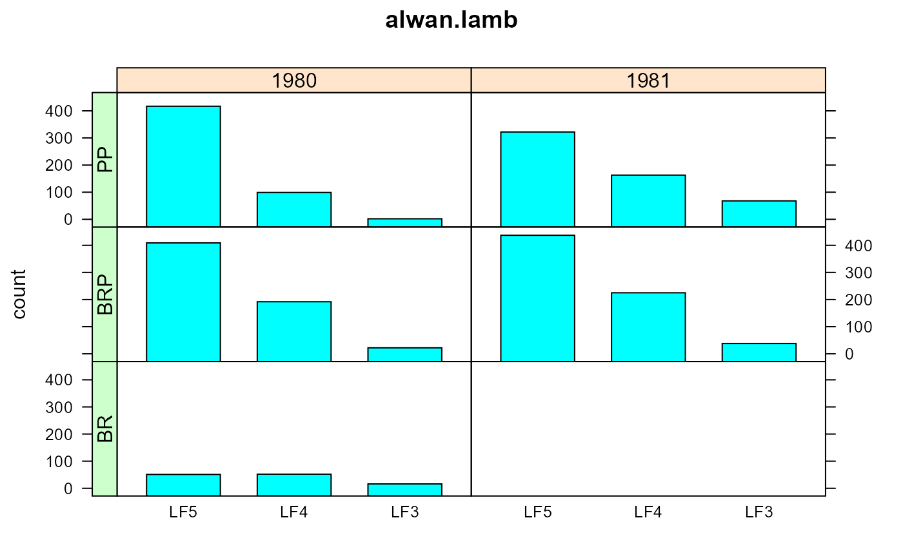
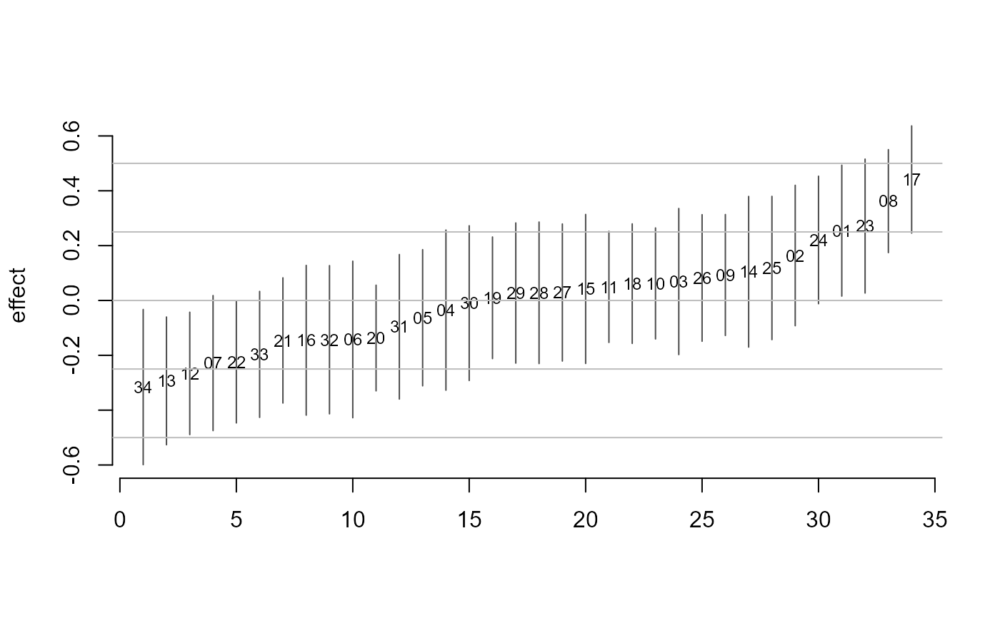
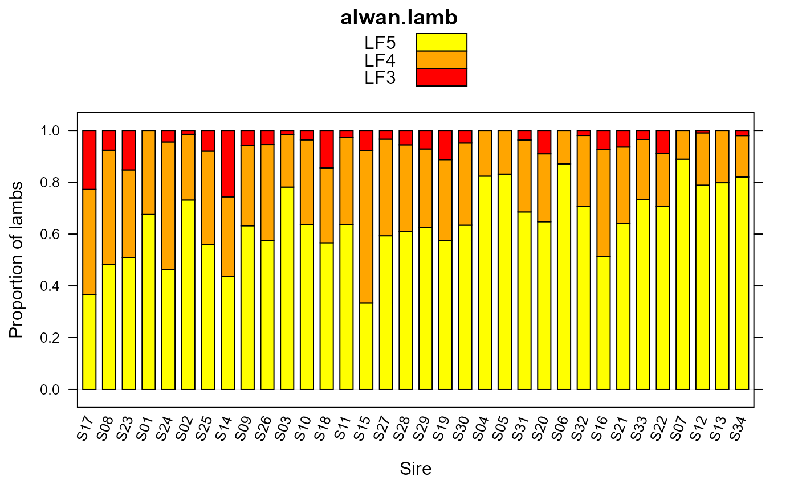

alwan.lamb.RdFor the 34 sheep sires, the number of lambs in each of 5 foot shape classes.
data("alwan.lamb")
A data frame with 340 observations on the following 11 variables.
yearnumeric 1980/1981
breedbreed PP, BRP, BR
sexsex of lamb M/F
sire0sire ID according to Alwan
shapesire ID according to Gilmour
countnumber of lambs
sireshape of foot
yrnumeric contrast for year
b1numeric contrast for breeds
b2numeric contrast for breeds
b3numeric contrast for breeds
There were 2513 lambs classified on the presence of deformities in their feet. The lambs represent the offspring of 34 sires, 5 strains, 2 years.
The variables yr, b1, b2, b3 are numeric contrasts for the fixed effects as defined in the paper by Gilmour (1987) and used in the SAS example. Gilmour does not explain the reason for the particular contrasts. The counts for classes LF1, LF2, LF3 were combined.
Mohammed Alwan (1983). Studies of the flock mating performance of Booroola merino crossbred ram lambs, and the foot conditions in Booroola merino crossbreds and Perendale sheep grazed on hill country. Thesis, Massey University. https://hdl.handle.net/10179/5900 Appendix I, II.
Gilmour, Anderson, and Rae (1987). Variance components on an underlying scale for ordered multiple threshold categorical data using a generalized linear mixed model. Journal of Animal Breeding and Genetics, 104, 149-155. https://doi.org/10.1111/j.1439-0388.1987.tb00117.x
SAS/STAT(R) 9.2 Users Guide, Second Edition Example 38.11 Maximum Likelihood in Proportional Odds Model with Random Effects https://support.sas.com/documentation/cdl/en/statug/63033/HTML/default/viewer.htm
# \dontrun{ library(agridat) data(alwan.lamb) dat <- alwan.lamb # merge LF1 LF2 LF3 class counts, and combine M/F dat$shape <- as.character(dat$shape) dat$shape <- ifelse(dat$shape=="LF2", "LF3", dat$shape) dat$shape <- ifelse(dat$shape=="LF1", "LF3", dat$shape) dat <- aggregate(count ~ year+breed+sire0+sire+shape+yr+b1+b2+b3, dat, FUN=sum) dat <- transform(dat, year=factor(year), breed=factor(breed), sire0=factor(sire0), sire=factor(sire)) # LF5 or LF3 first is a bit arbitary...affects the sign of the coefficients dat <- transform(dat, shape=ordered(shape, levels=c("LF5","LF4","LF3"))) # View counts by year and breed libs(latticeExtra) dat2 <- aggregate(count ~ year+breed+shape, dat, FUN=sum) useOuterStrips(barchart(count ~ shape|year*breed, data=dat2, main="alwan.lamb"))# Model used by Gilmour and SAS dat <- subset(dat, count > 0) libs(ordinal) m1 <- clmm(shape ~ yr + b1 + b2 + b3 + (1|sire), data=dat, weights=count, link="probit", Hess=TRUE) summary(m1) # Very similar to Gilmour results#> Cumulative Link Mixed Model fitted with the Laplace approximation #> #> formula: shape ~ yr + b1 + b2 + b3 + (1 | sire) #> data: dat #> #> link threshold nobs logLik AIC niter max.grad cond.H #> probit flexible 2513 -1935.06 3884.12 477(1435) 3.26e-03 3.7e+01 #> #> Random effects: #> Groups Name Variance Std.Dev. #> sire (Intercept) 0.04849 0.2202 #> Number of groups: sire 34 #> #> Coefficients: #> Estimate Std. Error z value Pr(>|z|) #> yr -0.14222 0.04834 -2.942 0.00326 ** #> b1 -0.37808 0.07154 -5.285 1.26e-07 *** #> b2 -0.31570 0.09709 -3.252 0.00115 ** #> b3 0.09887 0.06508 1.519 0.12872 #> --- #> Signif. codes: 0 '***' 0.001 '**' 0.01 '*' 0.05 '.' 0.1 ' ' 1 #> #> Threshold coefficients: #> Estimate Std. Error z value #> LF5|LF4 0.37814 0.04907 7.707 #> LF4|LF3 1.64351 0.05930 27.717#> $sire #> (Intercept) #> S01 0.254544356 #> S02 0.163964153 #> S03 0.069022446 #> S04 -0.035227884 #> S05 -0.062963869 #> S06 -0.142210089 #> S07 -0.228308187 #> S08 0.362315018 #> S09 0.092873448 #> S10 0.062107084 #> S11 0.049561258 #> S12 -0.265957083 #> S13 -0.293272810 #> S14 0.104669108 #> S15 0.041998914 #> S16 -0.145156128 #> S17 0.441200144 #> S18 0.061379717 #> S19 0.009783405 #> S20 -0.136898196 #> S21 -0.145735910 #> S22 -0.224834944 #> S23 0.271311572 #> S24 0.220700448 #> S25 0.118450870 #> S26 0.082118202 #> S27 0.029036648 #> S28 0.027969069 #> S29 0.027125179 #> S30 -0.009727541 #> S31 -0.095941137 #> S32 -0.143177140 #> S33 -0.196628516 #> S34 -0.315856884 #>## SAS var of sires .04849 ## Effect Shape Estimate Standard Error DF t Value Pr > |t| ## Intercept 1 0.3781 0.04907 29 7.71 <.0001 ## Intercept 2 1.6435 0.05930 29 27.72 <.0001 ## yr 0.1422 0.04834 2478 2.94 0.0033 ## b1 0.3781 0.07154 2478 5.28 <.0001 ## b2 0.3157 0.09709 2478 3.25 0.0012 ## b3 -0.09887 0.06508 2478 -1.52 0.1289 ## Gilmour results for probit analysis ## Int1 .370 +/- .052 ## Int2 1.603 +/- .061 ## Year -.139 +/- .052 ## B1 -.370 +/- .076 ## B2 -.304 +/- .103 ## B3 .098 +/- .070 # Plot random sire effects with intervals, similar to SAS example plot.random <- function(model, random.effect, ylim=NULL, xlab="", main="") { tab <- ordinal::ranef(model)[[random.effect]] tab <- data.frame(lab=rownames(tab), est=tab$"(Intercept)") tab <- transform(tab, lo = est - 1.96 * sqrt(model$condVar), hi = est + 1.96 * sqrt(model$condVar)) # sort by est, and return index ix <- order(tab$est) tab <- tab[ix,] if(is.null(ylim)) ylim <- range(c(tab$lo, tab$hi)) n <- nrow(tab) plot(1:n, tab$est, axes=FALSE, ylim=ylim, xlab=xlab, ylab="effect", main=main, type="n") text(1:n, tab$est, labels=substring(tab$lab,2) , cex=.75) axis(1) axis(2) segments(1:n, tab$lo, 1:n, tab$hi, col="gray30") abline(h=c(-.5, -.25, 0, .25, .5), col="gray") return(ix) } ix <- plot.random(m1, "sire")# foot-shape proportions for each sire, sorted by estimated sire effects # positive sire effects tend to have lower proportion of lambs in LF4 and LF5 tab <- prop.table(xtabs(count ~ sire+shape, dat), margin=1) tab <- tab[ix,] tab <- tab[nrow(tab):1,] # reverse the order lattice::barchart(tab, horizontal=FALSE, auto.key=TRUE, main="alwan.lamb", xlab="Sire", ylab="Proportion of lambs", scales=list(x=list(rot=70)), par.settings = simpleTheme(col=c("yellow","orange","red")) )